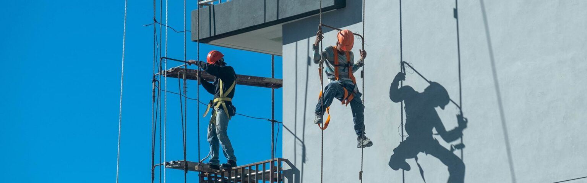

Ilink Insurance July 5, 2023 10:13 am
Scaffolds are temporary structures installed on construction sites to support work crews, equipment and materials. They are also installed to support the maintenance and repair of buildings and other man-made structures. Scaffolding services are usually provided by external contractors who have the required materials and technical expertise for a safe and efficient installation. The contractors may, in turn, outsource some of their supplies to vendors and subcontractors. Scaffolding insurance provides risk cover against the different types of liabilities and claims relating to this trade.
As scaffolds are high-rise open structures, they bear inherent risks such as collapse of the scaffold or the fall of crew members, materials or equipment. The scaffolds, crew, equipment and materials are further exposed to risks arising out of faults or accidents occurring in the main structure or unforeseen events beyond human control. These can result in damage or destruction of property or materials, physical injury, or the loss of life of crew members or others. There could also be other losses from work interruption, delay, or the need for repair or reconstruction. Scaffolding insurance is the best way to secure you against liabilities and claims relating to such risks.
When it comes to scaffolding, choosing the right insurance is of utmost importance. Ideally, the insurance should comprehensively cover all types of risks that affect this business. Here, it is most important to assess the right value of the risk. This is dependent on factors like height cover, public liability, and the competitive premiums offered by different insurers.
The risks include accidental drops of equipment from height, collapse of scaffolding due to poor construction or unforeseen weather events, worker-to-worker claims for contractors and sub-contractors who injure themselves on your job site, claims of people on the site for trips and falls, damage to built structures that scaffolders are working on, businesses and companies getting sued by local state workers compensation due to claims made by contractors and sub-contractors and fines for occupational health hazards and safety breaches.
Furthermore, all entities that are a part of the project are at the risk of being made liable for on-site accidents, damage or loss of life. This includes property owners, project promoters, contractors, subcontractors, and construction managers who are involved in the concerned operation. Seeking the expert advice of experienced insurance brokers is the preferred way to determine the right insurance that adequately covers all your risks.
The insurance market is highly competitive, with many companies offering different policies. The prospective insurer should study the various insurance products in depth and select the right policy for the risks involved. As this involves considerable expertise in the field, it is best that the insurer relies on an insurance brokerage firm to get the desired solutions. Unlike insurance agents, who represent the insurance companies, insurance brokers represent the insurer. Typically, the brokerage firm will first engage the client in an interactive session to identify the actual risks before coming up with tailor-made solutions.
There is no such thing as the ‘best company’. Your best choice depends on your individual conditions and the risks that you are exposed to. Being well versed in the trade, your brokerage firm will be aware of the latest trends, case histories and the competitive insurance policies on offer from different companies. After studying your needs, the brokers will zero in on the best policies available at the most affordable price.
In the unfortunate event that something goes wrong with your scaffolding operations, and it requires an insurance claim, it is again best for you to approach your insurance brokers. Contact the brokerage firm or its executive immediately by phone or email to inform them about the claim. They will then advise you regarding the formalities, documentation, and other requirements and ensure that your claim is processed quickly, fairly, and to your best advantage. Always remember that the brokers represent you and not the companies. It is very important that, following an unfortunate event requiring an insurance claim, you take immediate steps to prevent further loss through tangible and legitimate means. You should also remember never to accept liability, however small, for any of the losses, as this can result in your insurer denying or reducing your claim